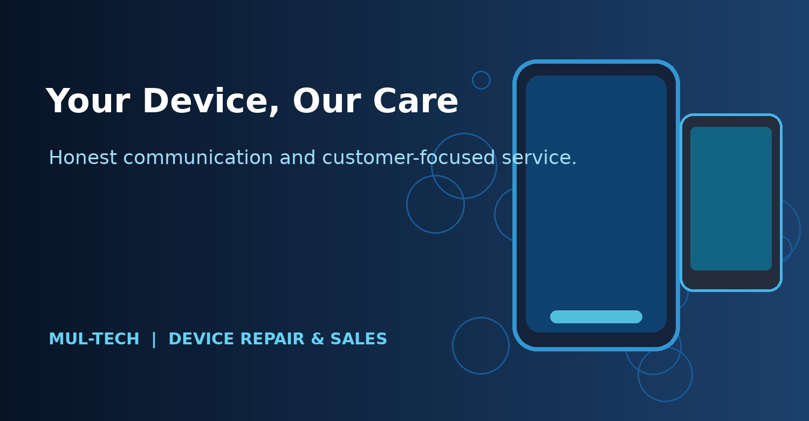

Reliability
Service customers can depend on.

Mul-Tech is a small device repair and retail business focused primarily on mobile phones. Our goal is to help customers keep their devices working through reliable, practical and affordable service.
To provide dependable, affordable and quality mobile phone and selected laptop repair services, helping people maintain their devices and stay connected.
To become a trusted device repair business known for affordability, quality workmanship and customer satisfaction.
Service customers can depend on.
Honest diagnoses, costs and limitations.
Careful work and appropriate testing.
Respect for customers, their devices and privacy.